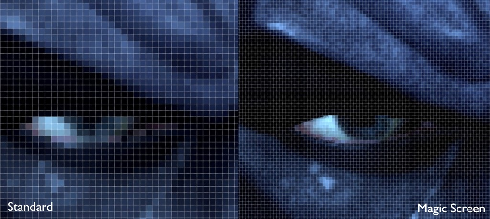
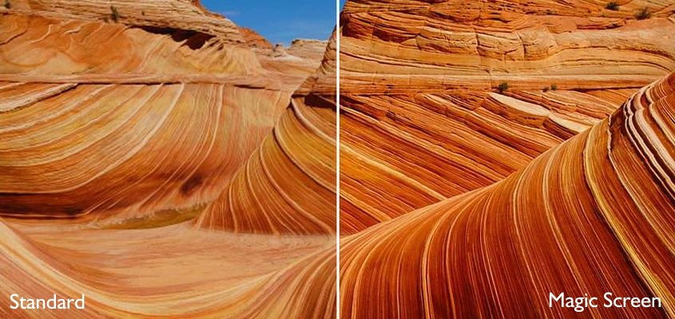
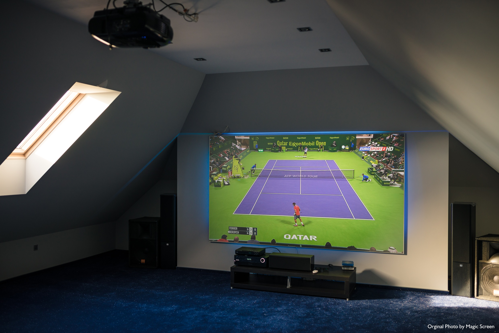
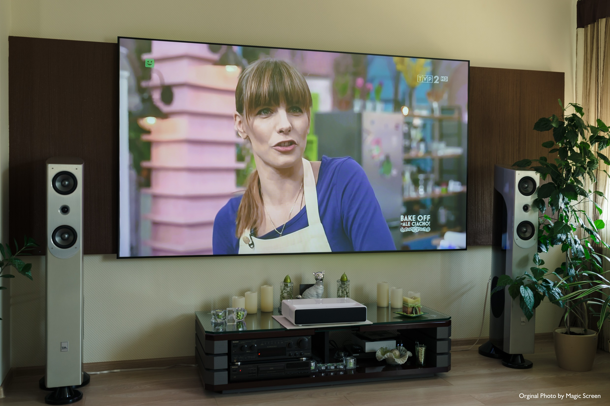

.jpg)
Ekrany MagicScreen to nowoczesne rozwiązanie w dziedzinie projekcji. Specjalnie zaprojektowane powłoki
ekranów mają za zadanie eliminować wpływ światła zewnętrznego na jakość projekcji. Skuteczna eliminacja
światła padającego na strukturę projekcyjną sprawia, iż obraz staje się bardzo kontrastowy i jaśniejszy, a
czerń staje się o wiele bardziej wyraźna, w stosunku do standardowych ekranów.
Jak wiadomo najważniejszym parametrem do jakiego dążą wszyscy producenci urządzeń wyświetlających jest
kontrast. Dzięki ekranom MagicScreen UST Black z powłoką projekcyjną CLR ten parametr wzrasta nawet o 900%,
w stosunku do standardowych ekranów. Dzięki temu obraz na ekranie MagicScreen będzie jasny i kontrastowy
nawet w bardzo jasnym pomieszczeniu.
.jpg)
Ekrany MagicScreen posiadają specjalnie zaprojektowaną gęstszą jak w ekranach standartowych strukturę
rozpraszającą. Daje to większą ostrość oraz głębię obrazu. Pod tym względem ekran z serii Reference zalicza
się do ścisłej światowej czołówki pod względem ostrości obrazu. Właśnie ten model zdobył największe uznanie
pod względem jakości obrazu u klientów w Europie.

Gęsta struktura rozprasza w danym punkcie więcej padającego światła.
Im więcej rozproszeń w danym punkcie tym uzyskujemy większą szczegółowość, ostrość przez co obraz nabiera
głębi a wszystkie szczegóły w dalszych planach są o wiele lepiej zaznaczone.

Dzięki rewelacyjnej absorpcji światła zewnętrznego obraz na ekranie MagicScreen może być wyświetlany w
pomieszczeniach bez konieczności jego zaciemniania. Dlatego perfekcyjnie sprawdzi się w każdym salonie
wypoczynkowym, sali konferencyjnej, barze czy restauracji. Obraz będzie wyraźny, nasycony o dużym
kontraście.

Dzięki ekranom Magicscreen UST Black możemy całkowicie zrezygnować z telewizora. Specjalna konstrukcja
ekranu współpracuje z projektorami ultra krótkiego rzutu co sprawia, że instalacja jest prostsza od
instalacji Telewizora. Ekran UST Black oferuje aż 95% separacji światłą otoczenia co sprawia, że do
oglądania obrazu na tym ekranie trzeba zastosować takie same warunki jak przy oglądaniu tradycyjnego
telewizora.
